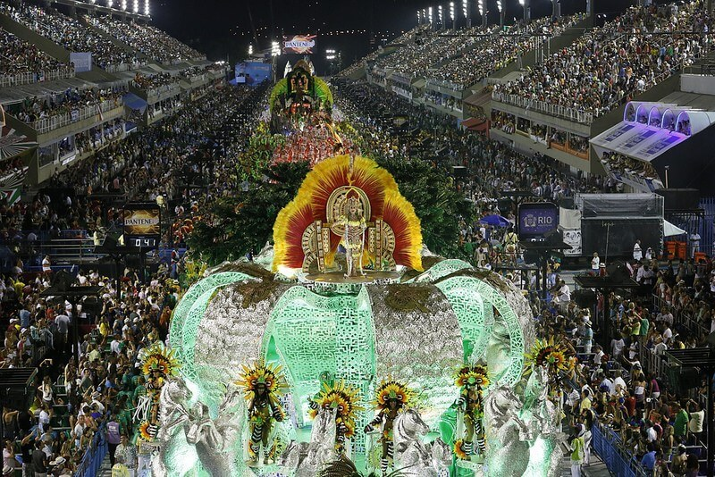
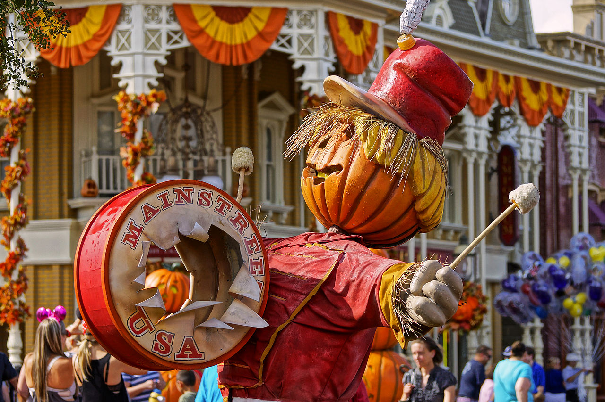
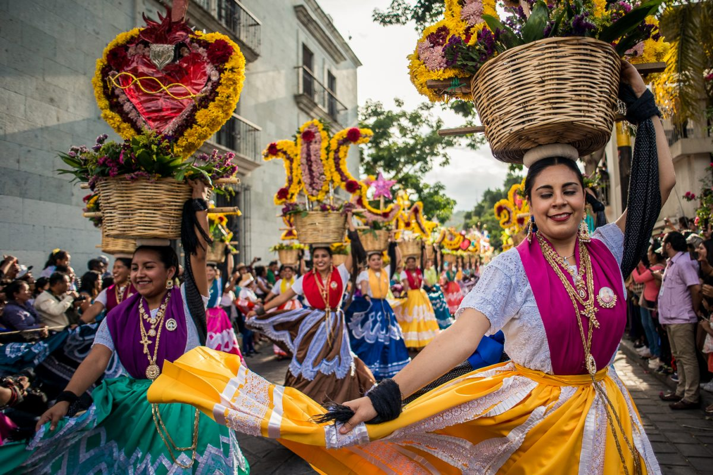

Conjunto de días entre los que hay algunos festivos en conmemoración de ciertos acontecimientos y durante el que suele haber vacaciones escolares.

Fiesta o acto solemne con que se celebra o conmemora un acontecimiento.

Día en que se celebra una fiesta, especialmente la fijada por la Iglesia católica para conmemorar un santo o un acontecimiento religioso.